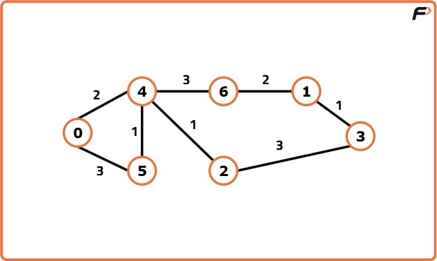
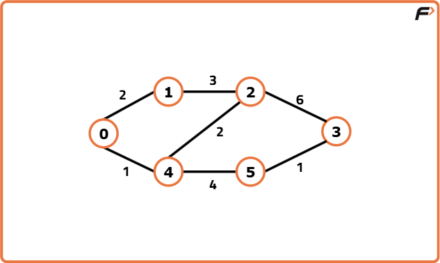
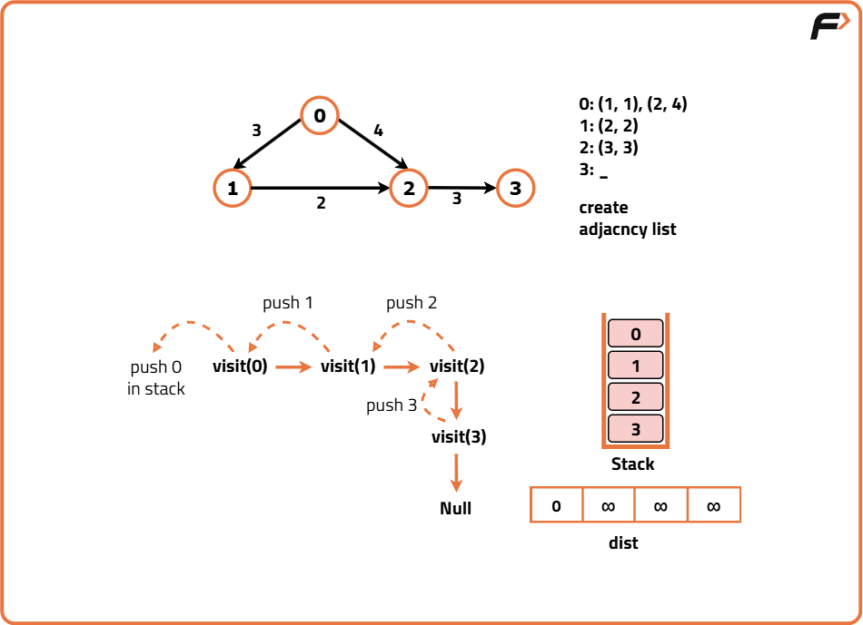
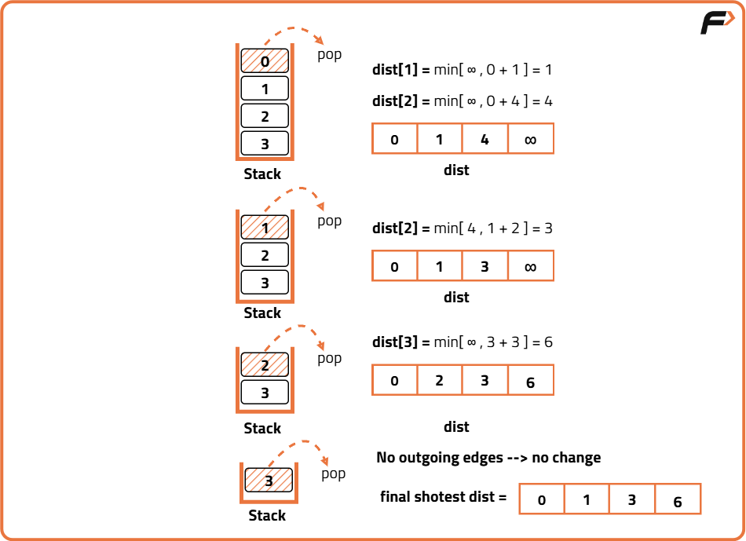

Shortest Path in Directed Acyclic Graph Topological Sort: G-27
Archived from https://takeuforward.org/data-structure/shortest-path-in-directed-acyclic-graph-topological-sort-g-27/
Problem Statement: Given a Directed Acyclic Graph of N vertices from 0 to N-1 and M edges and a 2D Integer array edges, where there is a directed edge from vertex edge[i][0] to vertex edge[i][1] with a distance of edge[i][2] for all i.
Find the shortest path from source vertex to all the vertices and if it is impossible to reach any vertex, then return -1 for that vertex. The source vertex is assumed to be 0.
Examples
Input:n = 7, m = 8 ,Edges = [[0,4,2], [0,5,3], [5,4,1], [4,6,3], [4,2,1], [6,1,2], [2,3,3], [1,3,1]]
Output:0 7 3 6 2 3 5
Explanation:The output represents the shortest distance from the source node (0) to all other nodes.
Dist[0] = 0
Dist[1] = 7
Dist[2] = 3
Dist[3] = 6
Dist[4] = 2
Dist[5] = 3
Dist[6] = 5

Input:n = 6, m = 7, edges = [[0,1,2], [0,4,1], [4,5,4], [4,2,2], [1,2,3], [2,3,6], [5,3,1]]
Output:0 2 3 6 1 5
Explanation:The output represents the shortest distances from the source node (0) to every other node.
Dist[0] = 0
Dist[1] = 2
Dist[2] = 3
Dist[3] = 6
Dist[4] = 1
Dist[5] = 5

Disclaimer: Here is the practice link to help you assess your knowledge better. It's highly recommend trying to
solve it before looking at the solution.
Approach
Algorithm
Finding the shortest path to a vertex is easy if you already know the shortest paths to all the vertices that can precede it. Processing the vertices in topological order ensures that by the time you get to a vertex, you've already processed all the vertices that can precede it which reduces the computation time significantly. In this approach, we traverse the nodes sequentially according to their reachability from the source.
Dijkstra's algorithm is necessary for graphs that can contain cycles because they can't be topologically sorted. In other cases, the topological sort would work fine as we start from the first node, and then move on to the others in a directed manner.
We will calculate the shortest path in a directed acyclic graph by using topological sort. Topological sort can be implemented in two ways- BFS and DFS. Here, we will be implementing using the DFS technique. Depth First Search, DFS is a traversal technique where we visit a node and then continue visiting its adjacent nodes until we reach the end point, i.e., it keeps on moving in the depth of a particular node and then backtracks when no further adjacent nodes are available.
Initial configuration:
Adjacency List: Create an adjacency list of the formed vector of pairs of size ‘N’, where each index denotes a node ‘u’ and contains a vector that consists of pairs denoting the adjacent nodes ‘v’ and the distance to that adjacent node from initial node ‘u’.
Visited Array: Create a visited array and mark all the indices as unvisited (0) initially.
Stack: Define a stack data structure to store the topological sort.
Distance Array: Initialise this array by Max integer value and then update the value for each node successively while calculating the shortest distance between the source and the current node.
The shortest path in a directed acyclic graph can be calculated by the following steps:
Perform topological sort on the graph using BFS/DFS and store it in a stack. In order to get a hang of how the Topological Sort works, you can refer to this article for the same.
Now, iterate on the topo sort. We can keep the generated topo sort in the stack only, and do an iteration on it, it reduces the extra space which would have been required to store it. Make sure for the source node, we will assign dist[src] = 0.
For every node that comes out of the stack which contains our topo sort, we can traverse for all its adjacent nodes, and relax them.
In order to relax them, we simply do a simple comparison of dist[node] + wt and dist[adjNode]. Here dist[node] means the distance taken to reach the current node, and it is the edge weight between the node and the adjNode.
If (dist[node] + wt < dist[adjNode]), then we will go ahead and update the distance of the dist[adjNode] to the new found better path.
Once all the nodes have been iterated, the dist[] array will store the shortest paths and we can then return it.


Code
#include <bits/stdc++.h>
using namespace std;
class Solution {
private:
// Helper function to perform DFS-based Topological Sort
void topoSort(int node, vector<pair<int, int>> adj[], int vis[], stack<int> &st) {
// Mark the current node as visited
vis[node] = 1;
// Traverse all adjacent nodes
for (auto it : adj[node]) {
// Get the target node from the pair
int v = it.first;
// If the node is not visited, call DFS on it
if (!vis[v]) {
topoSort(v, adj, vis, st);
}
}
// Push the current node onto the stack after visiting all neighbors
st.push(node);
}
public:
// Function to find the shortest paths from node 0 to all other nodes
vector<int> shortestPath(int N, int M, vector<vector<int>> &edges) {
// Create adjacency list for the graph
vector<pair<int, int>> adj[N];
// Fill the adjacency list with edges
for (int i = 0; i < M; i++) {
int u = edges[i][0];
int v = edges[i][1];
int wt = edges[i][2];
// Store (target node, weight)
adj[u].push_back({v, wt});
}
// Initialize visited array to keep track of visited nodes
int vis[N] = {0};
// Stack to store the topological order
stack<int> st;
// Call topoSort for all unvisited nodes
for (int i = 0; i < N; i++) {
if (!vis[i]) {
topoSort(i, adj, vis, st);
}
}
// Initialize the distance vector with infinity
vector<int> dist(N);
for (int i = 0; i < N; i++) {
dist[i] = 1e9;
}
// Distance to the source node (0) is 0
dist[0] = 0;
// Process all nodes in topological order
while (!st.empty()) {
int node = st.top();
st.pop();
// Relax all outgoing edges from the current node
for (auto it : adj[node]) {
int v = it.first;
int wt = it.second;
// Update distance if a shorter path is found
if (dist[node] + wt < dist[v]) {
dist[v] = wt + dist[node];
}
}
}
// Replace all unreachable nodes' distances with -1
for (int i = 0; i < N; i++) {
if (dist[i] == 1e9) {
dist[i] = -1;
}
}
// Return the final distance array
return dist;
}
};
// Driver code
int main() {
// Number of nodes and edges
int N = 6, M = 7;
// Edge list input
vector<vector<int>> edges = {
{0, 1, 2},
{0, 4, 1},
{4, 5, 4},
{4, 2, 2},
{1, 2, 3},
{2, 3, 6},
{5, 3, 1}
};
// Create object of Solution class
Solution obj;
// Call shortestPath function
vector<int> ans = obj.shortestPath(N, M, edges);
// Print the resulting shortest distances
for (int i = 0; i < ans.size(); i++) {
cout << ans[i] << " ";
}
return 0;
}
// Importing required classes
import java.util.*;
// Class containing method to find shortest path using Topo Sort (DAG)
class Solution {
// Function to perform DFS and build Topological Order
private void topoSort(int node, List<List<int[]>> adj, boolean[] visited, Stack<Integer> stack) {
// Mark the current node as visited
visited[node] = true;
// Traverse all adjacent nodes
for (int[] neighbor : adj.get(node)) {
// If the neighbor hasn't been visited, recurse
if (!visited[neighbor[0]]) {
topoSort(neighbor[0], adj, visited, stack);
}
}
// After visiting all neighbors, push this node into the stack
stack.push(node);
}
// Function to compute shortest path from source node (0) in a DAG
public int[] shortestPath(int N, int M, int[][] edges) {
// Create adjacency list for graph with weights
List<List<int[]>> adj = new ArrayList<>();
for (int i = 0; i < N; i++) {
adj.add(new ArrayList<>());
}
// Fill the adjacency list from edge list
for (int i = 0; i < M; i++) {
int u = edges[i][0];
int v = edges[i][1];
int wt = edges[i][2];
adj.get(u).add(new int[]{v, wt});
}
// Initialize visited array for topo sort
boolean[] visited = new boolean[N];
// Stack to hold topological order
Stack<Integer> stack = new Stack<>();
// Perform topo sort from unvisited nodes
for (int i = 0; i < N; i++) {
if (!visited[i]) {
topoSort(i, adj, visited, stack);
}
}
// Initialize distance array with infinity (represented by large value)
int[] dist = new int[N];
Arrays.fill(dist, (int)1e9);
// Distance to source (0) is 0
dist[0] = 0;
// Process nodes in topological order
while (!stack.isEmpty()) {
int node = stack.pop();
// If the node is reachable
if (dist[node] != (int)1e9) {
// Traverse all neighbors and update their distances
for (int[] neighbor : adj.get(node)) {
int v = neighbor[0];
int wt = neighbor[1];
// Relax the edge
if (dist[node] + wt < dist[v]) {
dist[v] = dist[node] + wt;
}
}
}
}
// Replace all unreachable nodes with -1
for (int i = 0; i < N; i++) {
if (dist[i] == (int)1e9) {
dist[i] = -1;
}
}
// Return the final distance array
return dist;
}
}
// Driver class to run the solution
class Main {
public static void main(String[] args) {
// Number of nodes and edges
int N = 6, M = 7;
// Edge list with weights
int[][] edges = {
{0,1,2}, {0,4,1}, {4,5,4},
{4,2,2}, {1,2,3}, {2,3,6}, {5,3,1}
};
// Create object of Solution class
Solution obj = new Solution();
// Get shortest path from source (0)
int[] result = obj.shortestPath(N, M, edges);
// Print the shortest distances
for (int val : result) {
System.out.print(val + " ");
}
}
}
# Import required modules
from collections import defaultdict, deque
# Define the Solution class
class Solution:
# Function to perform DFS and generate topological order
def topoSort(self, node, visited, stack, adj):
# Mark the current node as visited
visited[node] = True
# Traverse all the neighbors of the current node
for neighbor, weight in adj[node]:
# If the neighbor hasn't been visited, call DFS on it
if not visited[neighbor]:
self.topoSort(neighbor, visited, stack, adj)
# Push the current node to stack after visiting all its neighbors
stack.append(node)
# Function to find shortest path from source (node 0)
def shortestPath(self, N, M, edges):
# Create adjacency list with weights
adj = defaultdict(list)
for u, v, wt in edges:
adj[u].append((v, wt))
# Initialize visited array and stack for topological sort
visited = [False] * N
stack = []
# Call topoSort on all unvisited nodes
for i in range(N):
if not visited[i]:
self.topoSort(i, visited, stack, adj)
# Initialize distance array with infinity
dist = [float('inf')] * N
# Distance to source is zero
dist[0] = 0
# Process nodes in topological order
while stack:
node = stack.pop()
# Only process nodes that are reachable
if dist[node] != float('inf'):
# Traverse all neighbors of the current node
for neighbor, weight in adj[node]:
# Relax the edge if a shorter path is found
if dist[node] + weight < dist[neighbor]:
dist[neighbor] = dist[node] + weight
# Convert unreachable distances from inf to -1
for i in range(N):
if dist[i] == float('inf'):
dist[i] = -1
# Return the shortest path distances
return dist
# Driver code
if __name__ == "__main__":
# Number of nodes and edges
N = 6
M = 7
# List of edges with weights
edges = [
[0,1,2],[0,4,1],[4,5,4],
[4,2,2],[1,2,3],[2,3,6],[5,3,1]
]
# Create object of Solution class
obj = Solution()
# Call the function and store the result
result = obj.shortestPath(N, M, edges)
# Print the result
print(' '.join(map(str, result)))
// Class containing shortest path logic using Topological Sort
class Solution {
// Function to perform DFS and build topological order
topoSort(node, visited, stack, adj) {
// Mark current node as visited
visited[node] = true;
// Traverse all neighbors
for (let [neighbor, weight] of adj[node]) {
// If neighbor not visited, recurse
if (!visited[neighbor]) {
this.topoSort(neighbor, visited, stack, adj);
}
}
// Push the node after all neighbors are visited
stack.push(node);
}
// Main function to compute shortest path from source (0)
shortestPath(N, M, edges) {
// Initialize adjacency list
let adj = new Array(N).fill().map(() => []);
// Populate adjacency list with edges and weights
for (let [u, v, wt] of edges) {
adj[u].push([v, wt]);
}
// Initialize visited array and stack for topological sort
let visited = new Array(N).fill(false);
let stack = [];
// Perform topological sort from each unvisited node
for (let i = 0; i < N; i++) {
if (!visited[i]) {
this.topoSort(i, visited, stack, adj);
}
}
// Initialize distance array with large number (infinity)
let dist = new Array(N).fill(Infinity);
// Distance to source node is 0
dist[0] = 0;
// Process nodes in topological order
while (stack.length > 0) {
let node = stack.pop();
// Only process if node is reachable
if (dist[node] !== Infinity) {
// Traverse all adjacent nodes
for (let [neighbor, weight] of adj[node]) {
// Relax the edge
if (dist[node] + weight < dist[neighbor]) {
dist[neighbor] = dist[node] + weight;
}
}
}
}
// Convert unreachable distances to -1
for (let i = 0; i < N; i++) {
if (dist[i] === Infinity) {
dist[i] = -1;
}
}
// Return the shortest path distances
return dist;
}
}
// Driver code to test the function
const N = 6;
const M = 7;
const edges = [
[0,1,2],[0,4,1],[4,5,4],
[4,2,2],[1,2,3],[2,3,6],[5,3,1]
];
// Create object of Solution class
const obj = new Solution();
// Get result by calling shortestPath
const result = obj.shortestPath(N, M, edges);
// Print the result
console.log(result.join(' '));
Complexity Analysis
Time Complexity: O(N+M) {for the topological sort} + O(N+M) {for relaxation of vertices, each node and its adjacent nodes get traversed} ~ O(N+M),where N= number of vertices and M= number of edges.
Space Complexity: O(N) {for the stack storing the topological sort} + O(N) {for storing the shortest distance for each node} + O(N) {for the visited array} + O( N+2M) {for the adjacency list} ~ O(N+M) .